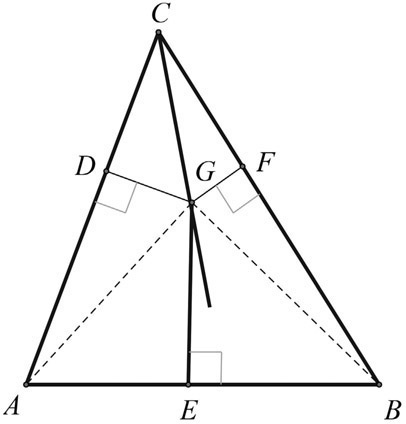
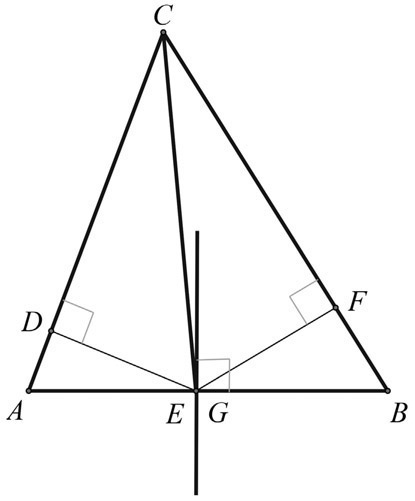
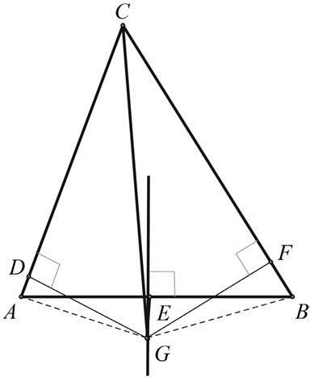
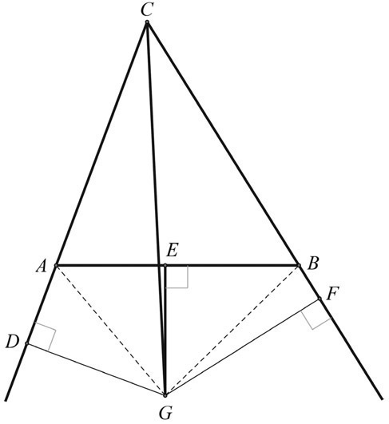
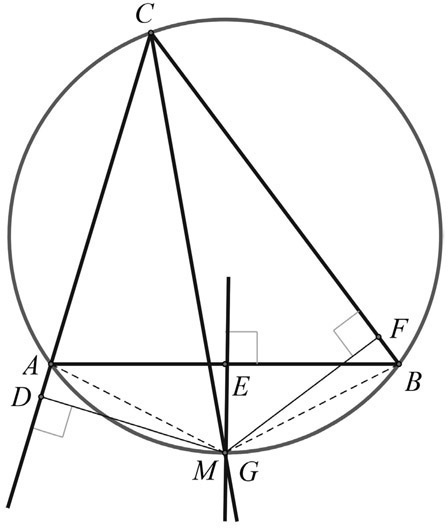
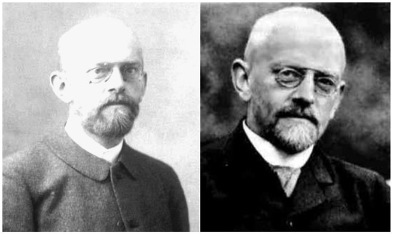
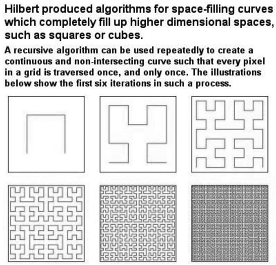

David Hilbert: German (1862–1943)
Until 1899, through most of the development of mathematics, it was felt that the work of Euclid was conclusive to our understanding of geometry. However, in 1899 the German mathematician David Hilbert published a book titled Foundations of Geometry, where he proposed a set of axioms that were to substitute for Euclid’s traditional axioms. Among these axioms was the concept of betweenness, something with which Euclid did not concern himself. You might ask, how might this affect our study of geometry? To better understand how this concept firms up our study of geometry, we will begin by considering an example that could be easily shown in high school geometry and demonstrates—rather dramatically—what happens when we don’t consider the concept of betweenness, as Euclid didn’t.
Mistakes in geometry—also sometimes called fallacies—tend to come from faulty diagrams that result from a lack of definition. Yet, as we know, in ancient times some geometers discussed their geometric findings or relationships in the absence of a diagram. For example, in Euclid’s work, the concept of “betweenness” was not considered. When not considering this concept, we can prove that any triangle is isosceles—that is, that a triangle that has three sides of different lengths actually does have two sides that are equal. This sounds a bit strange, but we can demonstrate this “proof,” which yearns for the concept of betweenness.
We shall go through this short journey to expose this ridiculous result. So let’s begin by drawing any scalene triangle (i.e., a triangle with no two sides of equal length) and then “prove” it is actually isosceles (i.e., a triangle with two sides of equal length). Consider the scalene triangle ABC, where we then draw the bisector of angle C and the perpendicular bisector of AB. From their point of intersection, G, draw perpendiculars to AC and CB, meeting them at points D and F, respectively. Depending on the shape of the scalene triangle drawn, we could now have four possibilities meeting the above description for the various scalene triangles: One possible configuration is shown in figure 40.1, where CG and GE meet inside the triangle at point G.
Another configuration is shown in figure 40.2, where CG and GE meet on side AB. (Points E and G coincide.)
A third configuration is shown in figure 40.3, where CG and GE meet outside the triangle (in G), but the perpendiculars GD and GF intersect the segments AC and CB (at points D and F, respectively).
Our fourth configuration is shown in figure 40.4, where CG and GE meet outside the triangle, but the perpendiculars GD and GF intersect the extensions of the sides AC and CB outside the triangle (in points D and F respectively).
The “proof” of the mistake or fallacy can be done with any of the above figures. Follow along and see if the mistake shows itself without

Figure 40.1.

Figure 40.2.

Figure 40.3.

Figure 40.4.
reading further. We begin with a scalene triangle ABC. We will now “prove” that AC = BC (or that triangle ABC is isosceles).
As we have an angle bisector, we have ∠ACG ≅ ∠BCG. We also have two right angles, such that ∠CDG ≅ ∠CFG. This enables us to conclude that ∆CDG ≅ ∆CFG (SAA). Therefore, DG = FG, and CD = CF, since a point on the perpendicular bisector (EG) of a line segment is equidistant from the endpoints of the line segment AG = BG. Also ∠ADG and ∠BFG are right angles. We then have ∠DAG ≅ ∠FBG (because they have a respective hypotenuse and leg congruent). Therefore DA = FB. It then follows that AC = BC (by addition in figs. 40.1, 40.2, and 40.3; by subtraction in fig. 40.4).
At this point you may feel quite disturbed. You might challenge the correctness of the figures. Well, by rigorous construction you will find a subtle error in the figures. We will now divulge the mistake and see how it leads us to a better and more precise way of referring to geometric concepts, something Hilbert’s axioms attempted to do.
First, we can show that the point G must be outside the triangle. Then, when perpendiculars meet the sides of the triangle, one will meet a side between the vertices, while the other will not. We can “blame” this mistake on Euclid’s neglect of the concept of betweenness.

Figure 40.5.
Begin by considering the circumcircle of triangle ABC (fig. 40.5). The bisector of angle ACB must contain the midpoint, M, of arc AB (because angles ACM and BCM are congruent inscribed angles). The perpendicular bisector of AB must bisect arc AB, and therefore, pass through M. Thus, the bisector of angle ACB and the perpendicular bisector of AB intersect on the circumscribed circle, which is outside the triangle at M (or G). This eliminates the possibilities we used in figures 40.1 and 40.2.
Now consider the inscribed quadrilateral ACBG. Since the opposite angles of an inscribed (or cyclic) quadrilateral are supplementary, ∠CAG + ∠CBG = 180°. If angles CAG and CBG were right angles, then CG would be a diameter and triangle ABC would be isosceles. Therefore, since triangle ABC is scalene, angles CAG and CBG are not right angles. In this case one must be acute and the other obtuse. Suppose angle CBG is acute and angle CAG is obtuse. Then in triangle CBG the altitude on CB must be inside the triangle, while in obtuse triangle CAG, the altitude on AC must be outside the triangle. The fact that one and only one of the perpendiculars intersects a side of the triangle between the vertices destroys the fallacious “proof.” This demonstration hinges on the definition of betweenness, a concept not available to Euclid, but made clear through Hilbert’s axioms.

Figure 40.6. David Hilbert in 1910 and 1940.
David Hilbert was born on January 23, 1862, in Königsberg, Prussia, which today is Kaliningrad, Russia, but then a German city. His father, Otto Hilbert, was a city judge and his mother, Maria Hilbert, pursued philosophy and astronomy. With this rearing, David Hilbert, as a child, already showed a special gift for mathematics and an interest in languages. In 1872, he entered the Friedrichs Kolleg Gymnasium, and seven years later graduated from the Wilhelm Gymnasium. The following year, in 1880, he enrolled in the University of Königsberg to study mathematics. There he befriended a colleague mathematician, Hermann Minkowski (1864–1909), who in 1882 returned from Berlin to Königsberg, where he had been previously studying. Minkowski became Hilbert’s dearest lifelong friend. In 1884, Hilbert and Minkowski collaborated with a newly arrived professor from Göttingen, Adolf Hurwitz (1859–1919). This three-way friendship and collaboration had a lasting effect on their professional careers. Upon receiving his doctorate in 1885, Hilbert began to prepare for the state examination to qualify for a teaching position at a gymnasium. Of course, he passed the examination. During this time, he also attended courses on plane geometry and spherical geometry. Hurwitz suggested that he spend the winter of that year at the University of Leipzig, specifically to attend the lectures of the well-known German mathematician Felix Klein (1849–1925). Klein then suggested that he visit Paris, to establish contact with several famous mathematicians, which he did successfully, even though it was somewhat strenuous for his French colleagues to speak German, since Hilbert was unable to speak French. Soon thereafter, he returned to the University of Königsberg to be a member of the faculty from 1886 until 1895, being appointed to the full professorship in 1893.
On October 12, 1892, Hilbert married his second cousin, Käthe Jerosch. They had one son, Franz, who was born on August 11, 1893. Hilbert’s professional career moved along with the strong support of Felix Klein, who arranged for Hilbert to be appointed to the chair of mathematics at the University of Göttingen, which was a center for many famous mathematicians such as Carl Friedrich Gauss (see chap. 29), Bernhard Riemann (see chap. 36), and Emmy Noether (see chap. 42), to name just a few. Hilbert spent the rest of his professional life at the University of Göttingen, where he supervised 69 doctoral students, many of whom became famous mathematicians in their own right. Hilbert also showed an intense interest in mathematical physics, which built a strong physics component at the university, and which ultimately showed its significance in having generated three Nobel laureates in physics: Max von Laue (1914), James Franck (1925), and Werner Heisenberg (1932).
In 1899, Hilbert published a book titled Foundations of Geometry, where he proposed a set of axioms that were intended to replace those that Euclid made famous in his Elements. Over the next several years, the book was translated into several languages. This set a new trend of a modern axiomatic method. One newly introduced concept was that of betweenness, as we mentioned earlier.
In the Appendix (see page 401), we provide a summary of Hilbert’s Axioms, but note that line segments, angles, and triangles may each be defined in terms of points and straight lines, using the relations of betweenness and containment. All points, straight lines, and planes in the following axioms are distinct, unless otherwise stated. Hilbert’s axioms essentially unified plane geometry and solid geometry into a single system.
In 1900, at the Second International Congress of Mathematicians in Paris,1 Hilbert proposed his famous 23 unsolved problems, which were considered the most challenging problems ever produced by a mathematician. Hilbert surveyed many fields of mathematics as he developed this list of 23 research problems that he thought would be a significant challenge to mathematicians going into the 20th century. By the way, one of his stated problems was Goldbach’s Conjecture (see chap. 21). Unfortunately, the problems proposed are beyond the scope of this book.2 However, suffice it to say, many of the problems were solved during the twentieth century.
Hilbert was also very concerned with logical reasoning, which certainly set the course of formalistic foundations of mathematics for the twentieth century and beyond. His work around 1910 with integral equations eventually led to research in functional analysis, which has had significant applications in physics. About this time, he also proved a conjecture in number theory—namely, that all positive integers can be expressed as the sum of a certain number of nth powers. For example, 11 = 32 + 12 +12, where n =2, or as another example, 65 = 43 + 13, where n =3.
Throughout the early part of the twentieth century, Hilbert remained a major contributor in the field of mathematics, as evidenced that from 1902 until 1939, he was the editor of Mathematische Annalen, one of the world’s leading mathematical journals. In 1925, at age 63, Hilbert contracted the vitamin deficiency disease pernicious anemia, which left him rather exhausted and he never produced as much after that time as he did in his previous years.
Another detrimental aspect of this brilliant mathematician’s career occurred in 1933, when the Nazis removed many significant Jewish faculty members from the University of Göttingen. During the following year, Hilbert had occasion to meet the German minister of education, Bernhard Rust, who asked Hilbert if the Mathematical Institute had suffered much as a result of the removal of the Jewish faculty members. Hilbert replied, “Suffered? It doesn’t exist any longer, does it!”3 Initially, Hilbert spoke out vehemently against the Nazi repression of his Jewish mathematician friends. However, in time, when he saw that his disgust was futile, he remained silent and withdrawn. Although he was raised as a Calvinist, he later left the church and became an agnostic. Hilbert died on February 14, 1943, in relative obscurity; most of his colleagues at the University of Göttingen were gone.
There are many aspects of mathematics for which Hilbert is remembered today. One such is known as a Hilbert space, which is a generalization of a Euclidean space. This extends the methods of vector algebra and calculus to spaces with any finite or infinite number of dimensions. Hilbert spaces provided the basis for important contributions to physics over the following decades and may still offer one of the best mathematical formulations of quantum mechanics. We show an example of a Hilbert algorithm for space-filling curves in figure 40.7.4
The mid-1930s was also the time when Hilbert and the Swiss mathematician Paul Bernays (1888–1977) coauthored the two-volume work Foundations of Mathematics, which presented fundamental mathematical ideas and introduced a collection of axiomatic systems, which formalized natural numbers and their subsets, and which offered an alternative to axiomatic set theory.
Hilbert’s legacy lives on today because of the many innovations he made in a variety of fields of mathematics. This is evidenced by the many mathematical concepts that still carry his name, such as Hilbert Number, Hilbert Matrix, Einstein–Hilbert Equations, Hilbert’s Axioms, Hilbert System, Hilbert Polynomial, Hilbert Function, Hilbert Curves, and many others.

Figure 40.7.